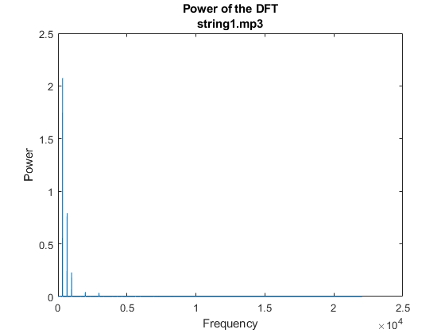
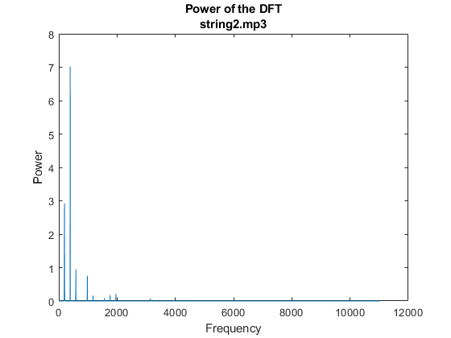
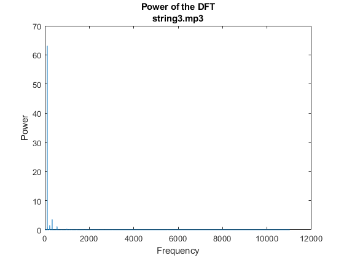
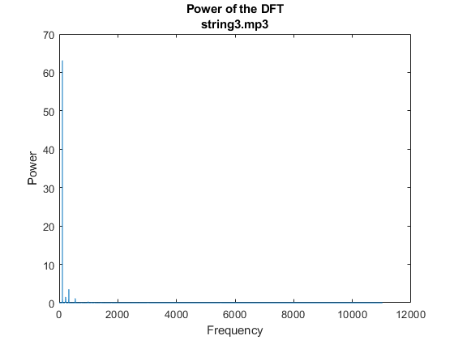

Contents
%%Matlab-Programming %Creating some variables and cleaning the workspace clear all; close all; list_harmonic_frequency= [] ; i=1 ; %%For each different song for name= ["string1.mp3" , "string2.mp3" , "string3.mp3"]
FFT of the sound
In this part we are doing a spectral analyis. In order to do it we're computing the fft of x (y) and to plot it we take the absolute value (because y is complex) and plotting the power of it (taking the square). In the figure below, we can peaks corresponding to the fundamental frequency and its harmonics (which are multiples of the fundamental frequency)
[x,fs]=audioread(name);
x = x(:,1);
y = fft(x);
n = length(x); % number of samples
f = (0:n-1)*(fs/n); % frequency range
power = abs(y).^2/n; % power of the DFT
figure;
plot(f(1:floor(n/2)),power(1:floor(n/2)));
title(['Power of the DFT' , name])
xlabel('Frequency');
ylabel('Power');
   
 Determining the played note with an accuracy in cent
In this part, we want to determine the fundamental frequency, which correspond to the played note. In order to do it we use the power of the DFT, and search for the first 'peak', and this correspond to the fundamental frequency. To avoid to select a peak corresponding to some noise we put a threshold to determine wether this peak corresponds to the fundamental frequency or some npise.
%Finding the value ( which sample )corresponding to the first peak [a , loc]= findpeaks(power, 'Threshold', 0.1,'NPeaks',1); %Converting this sample number to the corresponding frequency ( f = F x %fs /n harmonic_frequency = loc * fs/n; list_harmonic_frequency(i) = harmonic_frequency; i = i +1 ;
end
Accuracy in cent
For each fundamental frequency determined above, we compute the accuracy in cent thanks to a dictionarry which related frequency and the corresponding accuracy
keySet = [329.63 , 246.94 , 196.00 , 146.83 , 110.00 , 82.41]; valueSet = [0.15,0.15,0.15,0.08,0.08,0.04]; note = ["E1" , "B2" , "G3", "D4", "A5" , "E6"]; for frequency = list_harmonic_frequency %Finding the nearest frequency dist = abs(keySet - frequency); minDist = min(dist); idx = find(dist == minDist); %%Computing the corresponding accuracy cent_accuracy = minDist/valueSet(idx); A = ['The note is of' ,note(idx) , 'with an accuracy of', cent_accuracy ,'cent']; disp(A); end
"The note is of" "E1" "with an accuracy of" "1.1216" "cent"
"The note is of" "G3" "with an accuracy of" "3.2052" "cent"
"The note is of" "A5" "with an accuracy of" "1.4389" "cent"
Conclusion
So we see in this work that the first song correspond to E1 , the second to G3 , and the third one to A5. Each of them is precised with its corresponding accuracy.